Cómo se lee una ficha
En la lección 0 viste que cada ficha suele ser un batallón. Aquí aprenderás a leerla: cada número tiene su sitio, y el color y la forma de la cifra también cuentan. La regla de oro: lo que hace una unidad depende de la cara que muestra en ese momento.
Toca cada número
Desplegada o en movimiento
La cara con menos MA es la desplegada (Deployed); la de más MA, la de movimiento (Move). Voltear no cuesta MP, pero solo se hace antes de empezar a actuar y una vez por activación. Pulsa una ficha para darle la vuelta. 1.1c · 4.0b
Infantería, AV y Dual
Dos rasgos deciden el tipo: si la cara muestra la flecha de asalto y si tiene AV. Con eso se sabe en qué tablas combate. 1.1e
Infantería flecha · sin AV
Cualquier unidad sin AV impreso es «infantería» a efectos de terreno. Con la flecha de asalto tiene capacidad de ataque (Attack-Capable): es la que conquista terreno con ataques regulares, y la única que puede ser host del apoyo blindado.
Si además tiene MA táctico (mecanizada), puede hacer Shock Attacks.
Unidades AV AV · sin flecha
Tanques, cazacarros y cañones. No pueden ser la unidad atacante de un ataque regular, pero sí asistir. Se baten con otros AV en el Engagement Table y disparan a la infantería con el Attack by Fire.
Generan ZOC blindada y zona de enfrentamiento hasta su alcance.
Dual flecha + AV
Reconocimiento acorazado, panzergrenadiers con blindados orgánicos… Lo tienen todo: atacan en el Combat Table (con +1 por ser Dual), se enfrentan y hacen ataques por fuego. A cambio no pueden recibir apoyo.
Desprevenida sin flecha · sin AV
Una cara sin flecha ni AV: la infantería en marcha o un cañón enganchado. No tiene ZOC, no ataca ni asiste, no usa apoyo ni defensa preparada y no puede saltar HQs. Aun así observa para la artillería. 1.1d
Los cuatro colores del blindaje
La cifra grande de abajo a la izquierda es el AV. Su estilo indica el tipo, y el tipo cambia lo que la unidad puede hacer. 1.1e
Red AV rojo
El blindado ofensivo: tanques. Hace Shock Attacks, enfrentamientos, ataques por fuego y Recon si es de reconocimiento.
- En apoyo, da +1 al ataque y a la defensa de sus hosts.
Limited AV contorno
Más defensivo: cazacarros y cañones de asalto. Tira con -1 como tirador en el Engagement Table y no hace Shock Attacks (salvo si es de ruptura).
- En apoyo, solo ayuda a la defensa.
Stand Off AV negro
Cañones de gran alcance y fáciles de ocultar, como el 88. +1 al ser blanco de un enfrentamiento y, desplegados, solo un 6 los daña en el Barrage Table.
- En apoyo, ayudan a la defensa y obligan a un Stopping Engagement a quien entre en la ZOC de su host.
Light AV blanco
Ametralladoras sobre vehículo: autoametralladoras y tanquetas. No pueden iniciar enfrentamientos, solo recibirlos. Sí hacen Shock Attacks y ataques por fuego.
- En apoyo funcionan igual que un Limited AV.
Hard símbolo amarillo
Vehículos con buena protección. En el Barrage Table solo les afecta un 6. Si son Red AV, defienden con +2 en terreno abierto y suman +1 al hacer un Shock Attack. Los blindados abiertos y la infantería mecanizada de la Segunda Guerra Mundial no son Hard.
Breakthrough ruptura
Blindaje pesadísimo para abrir defensas fuertes: Tiger, King Tiger, IS-2, Brummbär. Siempre pueden hacer Shock Attacks, aunque su AV sea Limited, y suman +2 al hacerlos.
El alcance (Range) es la cifra pequeña de abajo, entre el AV y el MA. Si no hay ninguna, el alcance es 1 hex. Encima va el Action Rating, de 0 a 5.
El apoyo: blindados repartidos
En lugar de estar en el mapa, una unidad AV puede repartirse en pelotones entre la infantería de su formación. No ocupa hex ni apila: se coloca junto al HQ con su marcador. 1.5
Quién lo usa
Los hosts: la infantería con flecha de asalto de la formación (incluidas las independientes asignadas). Un solo apoyo sirve a todos los hosts a la vez, sin importar cuántos sean ni cuántos pasos le queden.
No pueden usarlo las unidades Dual, las desprevenidas, las que están en terreno prohibido para MA táctico ni las que tienen el apoyo perdido (Dropped).
Qué da
- Una ZOC blindada al host, que detiene a los tanques enemigos.
- +1 en el Combat Table: al atacar solo con apoyo Red AV; al defender, con cualquier tipo.
- Un AV propio para recibir enfrentamientos. Las bajas las sufre el apoyo, nunca el host.
- Protección: un hex con apoyo no puede recibir Shock Attacks ni ataques por fuego.
Se entra y se sale del apoyo solo en la fase de asignación. Las unidades marcadas «Support» en la ficha están siempre en apoyo.
Los que más vas a ver
Los marcadores no son unidades: no combaten, no apilan y no se ven afectados por nada.
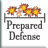
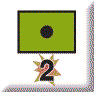
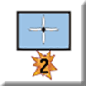
Qué puede hacer cada tipo
Elige un tipo para resaltarlo. Las cinco primeras columnas exigen una OBJ Zone (lección 3); Shock Attack, Attack by Fire, Engage y Recon gastan un Fire Event, uno de los dos que tiene cada unidad por activación (lección 2).
** Si la unidad Limited o Stand Off es además de ruptura, puede hacer Shock Attacks. «Recon» solo si la unidad es de reconocimiento.
Así se ven en la mesa
Fichas de Arracourt y Valley of Tears, tomadas de sus módulos de VASSAL. A la izquierda la cara desplegada; a la derecha, la de movimiento.
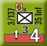
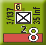
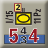
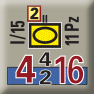
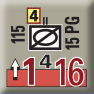
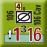
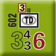
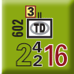
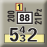
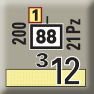
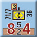